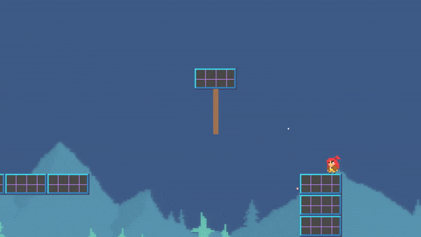

Rope
The player can use ropes to swing or for simple idle interactions. Add this component to an empty gameobject.
{kind=link}
Note
The player’s Rope ability must be enabled to interact with ropes.
Property |
|
|---|---|
Type |
If Swing is enabled, the player will swing on the rope. If Idle is enabled, the player will pass through the rope, causing it to move. |
Rope End Radius |
If Swing is enabled, once player and end tether are within this radius, the player will latch onto the rope automatically. |
Type Idle |
|
|---|---|
Rope Radius |
The system will check for rope collisions if the player is inside this radius. The center of this radius is set automatically. |
Tether Radius |
It is the radius of each tether used to detect the player. |
Force |
It is the movement force applied to a tether upon interaction. |
Property |
|
|---|---|
Tethers |
The number of tethers in the rope. |
Gravity |
The force of gravity acting on the rope. |
Stiffness |
The larger the number, the less sag the rope will have. For performance, keep this value below 30. |
Double Anchor |
Both the start and end of the rope are anchored. |
Rope Sprite |
The system will create a gameobject for a tether with the corresponding sprite. This will be used as a template to instantiate the remaining tethers. The second field corresponds to the size of the tether. |
Rope End (Optional) |
Every time the rope is created, it destroys and recreates all the tethers. Sometimes the end tether contains components like Health. To prevent having to add these components every time the rope is recreated, specify the end tether gameobject to prevent it from being destroyed. |
Create |
Once all the settings are chosen, press this button to create the rope. Anytime you change the rope’s position or a setting, recreate the rope to enact the changes. |
View |
If enabled, the rope gizmos will be visible. |
Important
The start of the rope corresponds to the transform’s position. Make sure the transform’s handle position is set to Pivot (and not to Center) for proper placement. A scene handle tool, a red circle, is used to specify the end of the rope. The distance between the start and end points determines the length of the rope.
Method |
|
|---|---|
ApplyImpactAtEnd (float directionX, float impact) |
This will apply an impact force in the x direction to the end of the rope. This is automatically used by the player for swinging. |
ApplyImpact (float value, Vector2 direction) |
Each tether contains the component Tether. This class contains this method. Call it to apply a force to a tether in the specified direction. Ignore the value parameter and instead set the impact force in the inspector field of the Tether class. |
UnlatchEndAnchor ( ) |
If double anchor is set true, you can set it false by calling this method. The end anchor will become free, letting the rope fall down. |
Tip
It’s possible to add a Health and Collider component to each tether for further interaction. This can be useful if the rope needs to collide with Projectiles. The Health component is equipped to call the ApplyImpact() and UnlatchEndAnchor() methods through Unity Events.